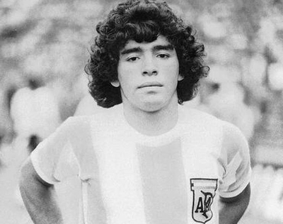
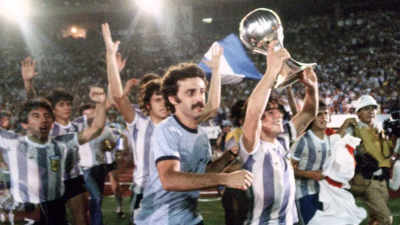
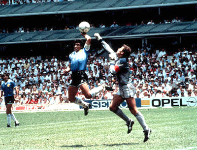
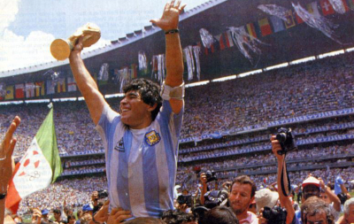
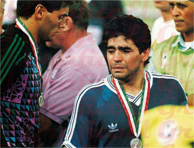
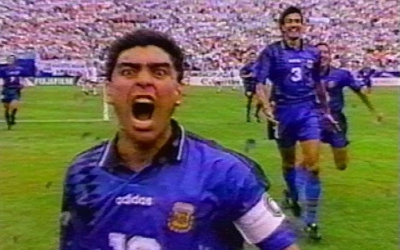
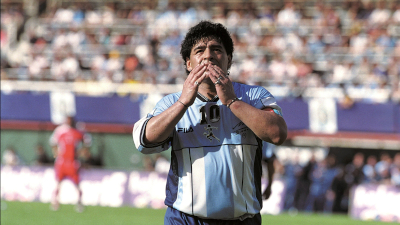
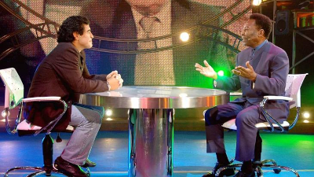
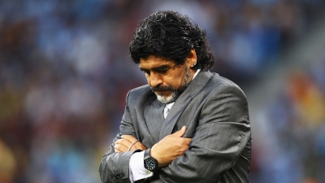
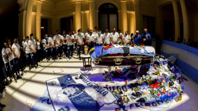

Diego Maradona
Diego Armando Maradona Franco (Lanús, 30 de outubro de 1960 — Tigre, 25 de novembro de 2020) foi um treinador e futebolista argentino que atuava como meia-atacante. Considerado um dos maiores futebolistas de todos os tempos, liderou a conquista da Copa do Mundo de 1986, marcando, nas quartas de final, o Gol do Século. Ele ainda disputou mais três mundiais (1982, 1990 e 1994), tendo alcançado o vice-campeonato em 1990. A Copa de 1994 ficou marcada como o ponto final da vitoriosa trajetória de Maradona pela Seleção, após ele ser apanhado no exame antidoping na partida contra a Nigéria (a segunda da Argentina no Mundial). Por conta de sua notória participação nos mundiais, em 2002 ele foi escolhido para o Time dos Sonhos das Copas do Mundo FIFA.
Amplamente considerado um dos maiores, mais famosos e mais polêmicos jogadores do século XX, diversas personalidades e organizações reconheceram-no como um dos melhores jogadores da história do futebol e dos mundiais. Na votação do Melhor Jogador do Século XX pela FIFA, realizada em dezembro de 2000, ele ficou na primeira posição da votação popular, e em terceiro na votação dos especialistas selecionados pela FIFA. Neste mesmo ano, ele foi eleito o quinto melhor jogador da história pela IFFHS.
Enquanto jogador, Maradona foi reverenciado como uma divindade em seu país natal, sendo criada inclusive uma igreja dedicada a ele. Seu maior momento foi na Copa do Mundo de 1986 que, na opinião popular, foi ganha sozinha por El Pibe de Oro, outra de suas muitas alcunhas. Nesta Copa, que ficou conhecida como "A Copa do Maradona", Dieguito teve influência direta em 71% dos 14 gols anotados pela Argentina na campanha do título (ele marcou cinco tentos e deu cinco assistências para gols), sendo a maior porcentagem individual da história das Copas. Internacionalmente, Maradona também consagrou-se como herói da equipe italiana do Napoli, um clube que, embora tradicional, esteve entre os pequenos do país. Com El Diez, o Napoli viveu momentos de glória no final da década de 1980, ganhando seus dois únicos títulos no Campeonato Italiano e lutando de igual para igual com as maiores equipes do país. Além disso, Maradona foi o primeiro jogador na história do futebol a estabelecer duas vezes o recorde mundial de transferência mais cara: primeiro, quando foi transferido para o Barcelona por um recorde mundial de 5 milhões de euros, e o segundo quando foi transferido para o Napoli pelo valor recorde de 6,9 milhões de euros.
A carreira de Maradona, porém, foi cercada de controvérsias, que não se limitaram aos gramados. Algumas delas estão relacionadas ao seu abuso de drogas, vício que levou ao seu banimento dos gramados por duas ocasiões, em 1991 e 1994. Teve também dois filhos fora do casamento que não reconheceu como seus. E rotineiramente fazia declarações contra os bastidores da FIFA, principalmente aos dirigentes João Havelange, Joseph Blatter, Michel Platini, Franz Beckenbauer, além de Pelé, e também tem um histórico de atritos com imprensas, incluindo a de seu próprio país. Morreu aos sessenta anos de idade, na sua residência em Tigre, vítima de uma parada cardiorrespiratória.
Primeiros Anos

Diego Armando Maradona nasceu em 30 de outubro de 1960, no Hospital Policlínico Evita em Lanús, Província de Buenos Aires, em uma família pobre de origem galega que havia se mudado da Província de Corrientes. Ele foi criado em Villa Fiorito, uma favela na periferia sul de Buenos Aires, Argentina, sendo o primeiro filho depois de quatro filhas. Ele tinha dois irmãos mais novos, Hugo (el Turco) e Raúl (Lalo), ambos também jogadores profissionais de futebol. Seu pai Diego Maradona "Chitoro" (1927–2015) era descendente de Guaranis, e sua mãe Dalma Salvadora Franco, "Doña Tota" (1930–2011), era de ascendência italiana.
Os pais de Maradona nasceram e foram criados na cidade de Esquina, na província de Corrientes, no nordeste do país, morando a apenas duzentos metros um do outro nas margens do rio Corriente. Em 1950, eles deixaram Esquina e se estabeleceram em Buenos Aires. Maradona recebeu sua primeira bola de futebol como um presente aos três anos de idade e rapidamente se tornou dedicado ao jogo.
Aos oito anos, Maradona foi observado por um caçador de talentos enquanto jogava no clube de sua vizinhança, Estrella Roja. Atuou no Los Cebollitas, o time de juniores do Argentinos Juniors de Buenos Aires. Como um goleiro de 12 anos, ele divertia os espectadores mostrando sua magia com a bola durante os intervalos dos jogos da primeira divisão. Ele nomeou o craque brasileiro Rivellino e o ponta-esquerda do Manchester United George Best entre suas inspirações enquanto crescia.
Carreira em Clubes
Argentinos Juniors
Aos nove anos, seu talento com a bola já o fazia ser a criança mais popular da favela em que morava, no subúrbio de Buenos Aires. Um colega havia sido aprovado em um teste para as categorias de base do Argentinos Juniors, e respondeu aos elogios do treinador dizendo que conhecia um garoto ainda melhor. O treinador, Francis Cornejo, deu-lhe então dez pesos para que pedisse a esse outro jovem para ir vê-lo. Cornejo e outros observadores do clube, incrédulos com o que viram no outro menino, foram acompanhá-lo na volta até a casa deste e, pedindo à mãe dele, conferiram sua documentação para desfazer qualquer engano plausível. Viram que Maradona realmente tinha apenas nove anos.
Os pais foram então convencidos a colocar Maradona no Argentinos, clube pequeno da capital, mas famoso pelo bom trabalho que desenvolvia com as categorias de base. Com quinze anos, disputava partidas preliminares, já atraindo multidões. Quando finalmente foi lançado entre os profissionais, não saiu mais. Demonstrava um repertório completo certeiro com a sua mágica perna esquerda: lançamentos, passes, dribles curtos, chutes certeiros de curta e longa distância, cobranças de falta e escanteios. Aos dezessete anos, recebeu a primeira convocação para a Seleção Argentina, da qual foi polemicamente cortado na Copa do Mundo de 1978.
1978 também significaria o ano em que foi pela primeira vez artilheiro do Campeonato Argentino. Em 1979, seria artilheiro tanto do campeonato argentino quanto do Campeonato Metropolitano, torneio que reunia os clubes da Grande Buenos Aires e que era na época considerado mais importante até do que o campeonato nacional. Naquele ano, seria eleito pela primeira vez o melhor jogador sul-americano.

A dose repetiu-se em 1980: Maradona foi artilheiro dos dois campeonatos e eleito outra vez o melhor jogador da América do Sul, com o adicional de ter levado o Argentinos Juniors ao vice-campeonato nacional, melhor resultado do clube até então. O Boca Juniors, que não conseguia títulos argentinos desde 1976, resolveu ir atrás dele, o que era a realização de um sonho para o jogador: Maradona sempre fora um torcedor xeneize fanático. Todavia, jamais seria esquecido na equipe que o revelou: o Argentinos renomearia seu campo para Estádio Diego Armando Maradona.
Boca Juniors

E foi em um amistoso contra o Argentinos que Maradona fez sua estreia pelo Boca, marcando de pênalti, atuando pelos dois times. Parte da concordância do Argentinos em emprestá-lo estava em uma cláusula do contrato de venda em que proibia que Diego enfrentasse a antiga equipe em jogos oficiais. Dois dias depois, atraiu 65 mil pessoas à Bombonera para vê-lo marcar duas vezes em vitória por 4–1 na primeira partida oficial, contra o Talleres de Córdoba. Amistosos, todavia, seriam continuamente disputados paralelamente às disputas do metropolitano, servindo para arrecadar finanças ao clube e gerando também uma Diegomania. Em dois deles, enfrentou dois adversários que lhes seriam comuns: o Milan, em San Siro (vitória por 2–1) e Zico, contra o Flamengo, no Maracanã (derrota por 0–2).
Naquele ano de 1981, com o Boca, Maradona fez grande dupla com Miguel Ángel Brindisi, com os dois marcando juntos 33 dos 60 gols que reconduziram o time ao título metropolitano — a primeira conquista do clube auriazul em cinco anos.

Maradona também marca em seu primeiro Boca x River, em um 3–0 listado entre as dez inesquecíveis vitórias do Boca em Superclásicos pela enciclopédia do centenário do clube; ele fez o último gol, deslocando o goleiro Ubaldo Fillol e completando para as redes antes que Alberto Tarantini conseguisse bloquear seu ângulo.
Contra o grande rival, marcaria em todos os clássicos disputados em 1981. O segundo deles, empatado em 1–1, foi de forma similar: tirando Fillol da jogada e marcando antes de Tarantini chegar. Os outros dois foram pelo campeonato nacional. Este foi disputado em quatro chaves de sete times onde os dois primeiros de cada uma se enfrentariam em mata-matas até a final, com o Boca liderando a sua, apesar de não vencer o River – foram uma derrota por 2–3 e um empate em 2–2, neste com Maradona marcando os dois, empatando a partida no último minuto.
Nas quartas de final, os boquenses enfrentaram o Vélez Sarsfield. Na Bombonera, em um tumultuado jogo de ida, em que os dois times terminaram a partida com nove jogadores, Maradona acabaria revidando uma das faltas que sofreu e foi suspenso pela comissão disciplinar da AFA. Seria seu último jogo oficial pelo clube do coração: o Boca acabaria eliminado pelo adversário na partida de volta. Maradona ainda participaria de amistosos em excursões do clube pelas Américas e Ásia antes de ser vendido para o Barcelona por uma transferência recorde de mais de 7 milhões de dólares acertada pouco antes da Copa do Mundo de 1982. Coincidência ou não, sem o seu grande astro, o Boca só voltaria a ser campeão argentino onze anos depois.
Barcelona

Maradona chegou à Catalunha como um messias. O Barça vivia carência de títulos desde o final da década de 1950. Desde 1960, só conseguira vencer o Campeonato Espanhol em 1974. Via o rival Real Madrid se distanciar cada vez mais no ranking de vencedores e ainda sentia o Atlético de Madrid aproximando-se, com um título a menos. O clube fez de tudo para que seu astro se sentisse à vontade, contratando vários argentinos para servirem-lhe de assessores e funcionários. A estratégia não teria bons resultados: o craque acabou por fechar-se naquele círculo de convivências e demoraria a se adaptar no estrangeiro.
Na primeira temporada, ele enfrentou o primeiro problema: em dezembro de 1982, sofreu de hepatite e ficou de fora dos campos por três meses. Os blaugranas terminaram apenas em quarto; o título de 1982–1983 ficou com o Athletic Bilbao. Na Copa do Rei, porém, decidiu a final contra o Real Madrid, marcando nos dois jogos da decisão e sendo aplaudido de pé pela torcida do arquirrival após a vitória por 2–1 em pleno Santiago Bernabéu – na partida de ida, no Camp Nou, o Barcelona havia deixado o rival empatar após estar vencendo por 2–0.

Mal iniciou a segunda temporada e, num jogo contra o Athletic, Maradona sofreu uma entrada bastante desleal do adversário Andoni Goikoetxea, fraturando o tornozelo esquerdo. O astro levou 106 dias para retornar ao futebol. Quando voltou, conduziu os blaugranas ao caminho do título. No entanto, por um ponto, a taça ficou justamente com o Athletic. Ambos os times decidiram também a Copa do Rei, e um novo dia ruim contra a equipe basca (que vence por 1–0) fez Maradona surtar. Ele protagonizou uma briga generalizada entre os jogadores.

O craque argentino, que já não tinha um relacionamento bom com a diretoria do Barcelona, foi praticamente descartado após receber uma suspensão de três meses em razão da confusão: a cúpula culé aceitou a oferta do pequeno Napoli, da Itália. Desgostoso com o que julgou como falta de esforço do clube em defendê-lo nos tribunais, Maradona acatou a transferência, encerrando um ciclo de dois anos de altos e baixos no Camp Nou.
Declararia em sua autobiografia, Yo Soy Diego, que o presidente Josep Lluís Núñez teria inveja de sua popularidade e era o principal responsável direto por sua saída. No livro, Maradona também apontou a coleção de fatores que o impediram de triunfar no Barcelona: desde a hepatite e lesões até gostar mais de Madrid. Ele também revelou que foi na Catalunha que começou seu relacionamento com as drogas. Aceitou a proposta do Napoli pois também estava arruinado financeiramente; chegou a doar a casa que tinha em Barcelona para pagar suas dívidas.
Napoli

Embora tradicional, a equipe napolitana era minúscula. Seus troféus resumiam-se a títulos nas divisões inferiores e a duas conquistas na Copa da Itália. Maradona foi logo amado e venerado como um rei, chegando de helicóptero a um Estádio San Paolo tomado por torcedores que ainda custavam a acreditar. Ele, curiosamente, poderia ter chegado antes ao time: o clube o havia sondado em 1979, quando ainda estava no Argentinos Juniors, mas ele recusara a proposta na época. "Para mim, Napoli era apenas uma coisa italiana, como pizza", comentou.
O espanto foi geral: a equipe mais vencedora do país, a Juventus, também estaria interessada, de acordo com a imprensa. Maradona terminou por escolher o clube celeste porque "foi o único a me fazer uma proposta real e porque o Giampiero Boniperti, ex-jogador e presidente da Juventus na época, já havia dito que um jogador com meu porte físico não chegaria a lugar algum". De acordo com as lendas, o presidente do Napoli, Corrado Ferlaini, teria blefado: depositou na federação italiana um envelope vazio, onde deveria estar o contrato do jogador, a fim de registrá-lo logo. Era o que ele precisava para ganhar tempo, enquanto a manobra era descoberta, para levantar o dinheiro para pagar o Barcelona.
Na primeira temporada, o clube ficou apenas em oitavo, mas somente dez pontos atrás do campeão Verona. Na segunda, a de 1985–1986, conseguiu um terceiro lugar. Sua terceira temporada começou com ele já consagrado em todo o planeta, com a conquista da Copa do Mundo de 1986. Em setembro, porém, surge a primeira grande polêmica extracampo: sua ex-empregada doméstica, Cristina Sinagra, denuncia que Maradona é o pai do filho que ela teve. A paternidade é confirmada posteriormente na justiça. O filho, Diego Sinagra (também conhecido como Diego Armando Maradona Jr.), jamais seria assumido e os dois só teriam seu primeiro encontro em 2003. Ainda assim, é na temporada 1986–1987 que Maradona dá ao Napoli seu primeiro título na Serie A, sobre a poderosa Juventus. A festa termina completa no clube e na vida pessoal: paralelamente, o Napoli é também campeão da Copa da Itália, e nasce sua filha Dalma (batizada com o mesmo nome da mãe de Diego).

Na temporada seguinte, Maradona, com quinze gols, alcança a artilharia do campeonato. O vice artilheiro é a sua dupla ofensiva, o brasileiro Careca – que fora para a equipe justamente para poder jogar ao lado de Maradona – com treze. O bi, porém escapa por três pontos: o título fica com o Milan de Marco Van Basten e Ruud Gullit, que consegue a liderança em vitória direta, em plena Nápoles, quando os dois clubes enfrentaram-se na antepenúltima rodada. O clube rossonero tornar-se-ia o maior rival do Napoli pelos títulos italianos: a Juventus decaía com a aposentadoria de Michel Platini em 1987 e a Internazionale vivia certa carência. Na Copa dos Campeões da UEFA, o Napoli cai cedo: é eliminado pelo Real Madrid, primeiro adversário que enfrenta.
Na temporada 1988–1989, o campeonato italiano vai surpreendentemente para a Inter de Milão, com a perseguição única do Napoli (único time na reta final com chances de tirar o título da Inter) terminando em vão. O consolo fica por conta da Copa da UEFA: Maradona lidera o Napoli na campanha rumo ao primeiro título continental do clube. Nos mata-matas finais, o clube passa pela rival Juventus e pelo Bayern de Munique até chegar na decisão, contra o Stuttgart. Os alemães são vencidos no embalo da dupla Maradona e Careca: ambos marcam na vitória de virada no jogo de ida, em Nápoles, e seguram o empate na Alemanha Ocidental. Paralelamente, naquele ano ele casa-se em um estádio fechado com a namorada de infância, Claudia Vilafañe, e nasce Gianinna, sua segunda filha.

Durante a temporada 1989–1990, o argentino novamente destacou-se como o maior jogador do Napoli na conquista do Scudetto, com dois pontos de vantagem sobre o Milan. Maradona vivia o auge da carreira. A veneração em Nápoles em torno dele era tamanha que ele sentiu-se à vontade para convocar a população local para torcer pela Argentina, e não pela Itália, na Copa do Mundo de 1990, a ser realizada em solo italiano em semanas. Gerou enorme polêmica no resto do país, notadamente no norte, região dos times mais tradicionais, ressentidos com o sucesso meteórico do Napoli, que, por sua vez, era um clube de uma região historicamente desfavorecida no país. O presidente da federação italiana chegou a ir a público pedir que os cidadãos napolitanos torcessem pela Azzurra, e pesquisas de opinião foram feitas por jornais e revistas para calcular a que ponto Maradona conseguira influenciar Nápoles.

Na Copa, Maradona liderou uma Argentina esfrangalhada ao vice-campeonato, mas eliminando a Itália nas semifinais, aumentando o rancor do resto do país.
1990-1991 significar-lhe-ia um baque maior que a fratura em 1984 e as constantes pancadas no duro futebol italiano: novamente, o Napoli caiu cedo na Copa dos Campeões, na disputa por pênaltis contra os soviéticos do Spartak Moscou. Nada comparado ao que vem em março de 1991: seu exame antidoping após partida contra o Bari dá positivo para cocaína, escancarando o vício do astro nas drogas.
Ele, ligado por provas robustas com a Camorra, a máfia napolitana, foi suspenso do futebol por quinze meses. Entra em depressão e, no mês seguinte, em abril, é, sob efeito de drogas, preso em Buenos Aires pela polícia no bairro de Caballito.
Decadência
O Napoli conseguiu se virar na temporada 1991–1992 sem seu maior ícone, terminando em quarto. Maradona, decidido a deixar o clube, protagonizou uma batalha judicial que durou 86 dias. A liberação foi brecada pelo presidente do clube, que estava brigado com o argentino. Após intervenção da FIFA, Maradona conseguiu se desligar do Napoli e acertou um retorno à Espanha, agora como jogador do Sevilla, na época comandado por Carlos Bilardo, seu ex-técnico na Seleção. Anos mais tarde, Ferlaini, o antigo presidente do Napoli, declararia que Diego fora salvo diversas outras vezes do antidoping, que era burlado com a urina de jogadores "limpos" nas vezes em que o argentino era sorteado.

Sua estadia no clube andaluz não durou mais que a temporada 1992–1993, onde fora apenas razoável: Maradona, pesando mais do que deveria, descobriu que os diretores do Sevilla, com suspeitas sobre suas saídas noturnas, contrataram detetives para monitorá-lo. O argentino, que também desentendera-se com Bilardo, abandonou o time imediatamente e acertou outro regresso, desta vez ao país natal, contratado pelo Newell's Old Boys. Mesmo recuperando a forma, durou menos ainda na equipe de Rosário: uma sucessão de lesões musculares provocaram o término de seu contrato, após apenas cinco jogos oficiais e alguns amistosos, um deles, curiosamente, contra o Vasco da Gama.

Deprimido, Maradona afundou cada vez mais nas drogas. Em fevereiro de 1994, irritado com o assédio da mídia, atirou com uma espingarda de ar comprimido em jornalistas que faziam plantão em frente à sua casa. Acima do peso e desmotivado, a impressão geral era a de que ele abandonaria a carreira antes da Copa do Mundo de 1994. Conheceu então um fisiculturista em Buenos Aires que prometeu deixá-lo em forma novamente. A promessa foi cumprida, mas um novo antidoping durante a Copa desmascararia que, por trás do milagre, estava a proibida substância efedrina, uma droga usada para emagrecer. A FIFA terminou por puni-lo com outros quinze meses de banimento.
Sem poder jogar, Maradona teve uma rápida passagem como diretor-técnico do pequeno Textil Mandiyú. Em poucas semanas, porém, abandonou o cargo do time de Corrientes. Assumiu como treinador do Racing, mas em março do ano seguinte desvincula-se dele também; o presidente que o havia contratado havia perdido as eleições. As duas experiências foram curtas e pouco alentadoras: no Mandiyú, foram doze partidas e apenas uma vitória e, no Racing, onze jogos e apenas dois triunfos. Poderia ter tido menos jogos ainda no Racing: após um 0 a 0 no clássico da cidade de Avellaneda, contra o Independiente, em que foi expulso pelo árbitro, ameaçou sair do cargo, mas foi contido pelo presidente.
Com o fim da punição, voltou ao seu amado Boca Juniors, comprado por dez milhões de dólares pelo Grupo Eurnekian, que em troca teria os direitos televisivos sobre onze partidas. O retorno, iniciado em jogo contra o Colón, foi estampado até em seus cabelos: Maradona descoloriu uma faixa do lado superior direito, simbolizando a faixa dourada do uniforme boquense. O clube acertou também com seu amigo Claudio Caniggia, outro notório usuário de cocaína. Foi no jogo seguinte, o primeiro oficial dele contra o Argentinos Juniors, que ele marcou seu primeiro gol na volta ao Boca.

O Boca não ganhava títulos argentinos havia cinco campeonatos – o último fora o Apertura de 1992. Com Maradona e Caniggia em grande parceria, o clube conseguiu confortável liderança no Apertura 1995. Porém, em partidas sem seu maior astro, os xeneizes perdem pontos preciosos, chegando e levar de 4–6 para o Racing em plena Bombonera — a mesma quantidade de gols que haviam tomado em todo o torneio, até então. O clube deixou o título escapar para o Vélez Sarsfield e terminou apenas em quarto. O mesmo clube ganhou o Clausura 1996, com o Boca, comandado por Carlos Bilardo (cuja contratação ele se opusera; no mesmo ano, brigaria com o presidente boquense, Mauricio Macri), ficando em quinto. A edição do torneio é mais lembrada por uma goleada de 4–1 sobre o River Plate em que a afinada dupla Caniggia e Maradona se beijam na boca, em comemoração após o terceiro gol do atacante loiro.

No entanto, foi o rival quem viveu períodos melhores: ganhou o Apertura 1996 (o Boca, sem tantas presenças de Maradona, fica apenas em décimo), a Copa Libertadores da América de 1996, o Clausura 1997 (nono lugar para o Boca, que só vê Maradona jogar uma vez) e o Apertura 1997. Durante este último campeonato, em que, no início, chegou a ser novamente pego no antidoping, Maradona fez sua última partida profissional, justamente em um Superclássico no Monumental de Núñez, em 25 de outubro. Jogou o primeiro tempo da partida e foi substituído pelo jovem Juan Román Riquelme. O Boca venceu por 2–1 e conseguiu a liderança com dois pontos de vantagem sobre o arquirrival, mas Maradona preferiu anunciar sua retirada, após rumores de novo antidoping positivo. O River conseguiria retomar a dianteira e seria campeão com um ponto de vantagem sobre o Boca.

Falando de si na terceira pessoa, Maradona resumiu seu retorno infrutífero em títulos ao Boca: "O Maradona não está feliz porque sabe que o Maradona está abaixo do padrão em que normalmente se coloca". Ainda assim, houve setores da imprensa que defenderam sua convocação para a Copa do Mundo de 1998, o que o faria ser um dos recordistas em participações no torneio.
Seleção Nacional
Maradona fez seu primeiro jogo pela Argentina em 1977, num amistoso contra a Hungria. Integrou o grupo dos pré-convocados para a Copa do Mundo de 1978, mas, apesar do clamor popular para vê-lo no torneio, a ser disputado no país, foi deixado de fora pelo técnico César Luis Menotti, em decisão polêmica em favor de Norberto Alonso, também apreciado por público e mídia – no momento da convocação, este era o artilheiro do campeonato com o futuro campeão River Plate e fizera um belo gol no último amistoso, contra o Uruguai, tendo entrado durante a partida. O que mais favorecia Beto Alonso, todavia, era o fato de ele ser o preferido dos dirigentes da AFA, o que incluía o general Carlos Alberto Lacoste.
"Ele ainda é um garoto e precisa amadurecer. Mas sem dúvida ele pode mais que os outros e ainda vai brilhar muito no futebol", explicou Menotti sobre a decisão de cortar Maradona. Maradona ficou arrasado, mas não guardou mágoas de Menotti, considerado por ele o melhor técnico que já teve, superior até a Carlos Bilardo, o comandante em 1986. Pouco após o corte, foi consolado por Omar Sivori, ex-craque de história no River Plate e na Juventus e que defendera tanto a Argentina quanto a Itália: "Me escute, garoto… você tem a verdade do futebol dentro de si e toda uma vida para mostrá-la". Apesar da decepção, Maradona chegaria a enviar um telegrama desejando sorte aos jogadores, a acompanhar dois jogos da Albiceleste no Monumental de Núñez, contra Itália e na decisão contra a Holanda, e a participar dos festejos pós-título pela cidade de Buenos Aires.
No ano seguinte, Maradona liderou a Seleção na conquista do Campeonato Mundial Sub-20 de 1979. Marcou seis vezes e foi eleito o melhor jogador da competição.
1979 foi também o ano em que ele marcou o primeiro gol pela seleção principal, em sua nona partida por ela. Foi em vitória por 3–1 sobre a Escócia, em Glasgow. Ele também marcou o único gol da Argentina na derrota por 1–2 para Seleção do Resto do Mundo, em amistoso que ironicamente celebrava o primeiro aniversário do título argentino na Copa do Mundo de 1978.
Copa do Mundo de 1982
A Argentina, detentora do título, realizou contra a Bélgica o jogo inaugural da Copa do Mundo de 1982. O time, no papel, era ainda melhor do que o de 1978: reunia a campeã espinha-dorsal formada por Ubaldo Fillol, Daniel Passarella, Mario Kempes, Osvaldo Ardiles, Américo Gallego e Daniel Bertoni somada com as estrelas do título de juniores de 1979, Maradona e Ramón Díaz. Dieguito já era conhecido internacionalmente, ainda mais após a venda para o Barcelona, concretizada pouco antes do mundial.
A estreia de Maradona em Copas, porém, seria desagradável. Ele foi repetidamente chutado e derrubado pelos belgas, chegando a receber entradas violentas pelas costas e ser puxado de cima da bola. Porém, o árbitro tchecoslovaco Vojtech Christov não tomou nenhuma medida contra os adversários, que venceram por 1–0. A Argentina recuperou-se e se classificou após vencer Hungria, em que ele marcou seus dois primeiros gols em Copas, em goleada de 4–1, e El Salvador. A segunda fase seria decidida em quatro grupos com três países, com cada grupo conferindo uma vaga nas semifinais. A Argentina enfrentaria Itália e Brasil.
O primeiro jogo foi entre argentinos e italianos e novamente Maradona seria caçado em campo, com uma truculenta marcação individual de Claudio Gentile. Após levar socos, chutes e joelhadas do início ao fim, foi Maradona, e não Gentile, a receber o cartão amarelo do juiz romeno Nicolae Rainea, que entendia que o argentino reclamava energicamente sem cabimento. A Itália venceu por 2–1 e praticamente obrigou a Argentina a vencer os brasileiros para haver chances reais de classificação.
Contra os rivais, Maradona finalmente veria um cartão vermelho em uma falta desleal que lhe envolvia. Porém, o autor da infração era ele, após desferir com a sola do pé um chute, pensando ser em Falcão, nos testículos de Batista. Cinco minutos antes do fim do jogo, perdendo por 1–3, Maradona saía de campo e da Copa. Permaneceu na Espanha, para jogar pelo Barcelona. Reconheceu mais tarde que a seleção vivia um ambiente festeiro e excessivamente confiante antes do torneio.
Copa do Mundo de 1986
Maradona foi convocado para o segundo mundial do México com algumas críticas. Alguns setores da mídia questionavam a escolha do técnico Carlos Bilardo em chamá-lo e ainda por dar-lhe a tarja de capitão. Maradona ainda não havia triunfado totalmente no Napoli. Na Itália, ainda era considerado apenas um bom jogador e malabarista. Mesmo assim, o respeito que despertava em Bilardo era tão grande que o treinador não usaria na competição o convocado Daniel Passarella, estrela e capitão do título da 1978, mas desafeto de Dieguito.
Primeira fase
Maradona novamente apanhou na estreia, contra a Coreia do Sul, vencida por 3–1. No jogo seguinte, marcou o gol argentino no empate em 1–1 contra a campeã Itália. A classificação veio após vitória por 2–0 sobre a Bulgária.
Oitavas de final: Argentina x Uruguai
As oitavas de final seriam contra os rivais do Uruguai de Enzo Francescoli. Maradona teve um gol anulado e, instigado, realizou a melhor partida de sua vida, de acordo com o próprio, conforme registrado no livro “Mi Mundial, mi verdad”. A Albiceleste eliminou a Celeste por 1–0, em dia em que ele afirma ter realizado bem todas as jogadas. O próximo adversário da Argentina seria a Inglaterra.
Quartas de final: Argentina x Inglaterra
Era a primeira vez que ambos se enfrentavam após a Guerra das Malvinas e um clima bastante tenso rondava a partida, fazendo com que o próprio exército mexicano patrulhasse as arquibancadas e as redondezas do Estádio Azteca, chegando a haver tanques nas ruas. O primeiro tempo terminou sem gols. No início do segundo, após driblar marcadores, Maradona passou a bola para um companheiro, que a perdeu. Steve Hodge, zagueiro adversário, chutou alto e a bola foi em direção ao goleiro Peter Shilton. Maradona continuou a correr e, com o punho cerrado, jogou a bola por cima de Shilton, vinte centímetros mais alto, fazendo com que a bola entrasse no gol inglês, naquele gol que ficou conhecido como "La Mano de Dios". A despeito dos protestos dos britânicos com o árbitro, o tunisiano Ali Bin Nasser, o gol foi validado. Curiosamente, não era a primeira vez que ele fazia isso: em jogo do campeonato italiano de 1984–1985 contra a Udinese de Zico, marcou dessa forma e ali, também, a trapaça não fora anulada.
Em espaço de alguns minutos, o argentino marcaria outro gol igualmente célebre, e que ficou conhecido como O Gol do Século. A Argentina trocava passes em seu campo de defesa quando Maradona pediu a bola. Ele estava de costas para o campo de defesa inglês quando recebeu, tendo em volta três adversários: Steve Hodge, Peter Reid e Peter Beardsley. Quando Beardsley aproximou-se para disputar a bola, Maradona girou em sentido contrário, saindo do meio de campo e avançando na meta inglesa. Reid o perseguiu sem sucesso e Terry Butcher foi facilmente deixado para trás, assim como Terry Fenwick.
Butcher continuou correndo atrás, tentando ainda um carrinho quando Maradona tocou para as redes no momento em que Shilton tentou bloqueá-lo. A Argentina se fechou, chegando a sofrer gol de Gary Lineker a dez minutos do fim e quase levar empate do mesmo Lineker depois, mas conseguiu manter a vitória e se classificou. Após a partida, Maradona declarou que "se houve mão na bola, foi a mão de Deus", para o delírio da torcida argentina, sentindo-se vingada. O outro gol, por sua vez, seria eleito em 2002, o mais bonito da história das Copas. Porém, este não foi o gol que Don Diego considerou o mais bonito de sua carreira, e sim um que ele fez num jogo amistoso realizado em 19 de fevereiro de 1980, na Colômbia, quando o então jovem Maradona defendia o Argentinos Juniors.
Semifinal: Argentina x Bélgica
Se a Guerra das Malvinas motivara os argentinos contra os ingleses, Maradona continuou especialmente motivado nas semifinais. Reencontraria a Bélgica, que tanto lhe chutara em 1982. Para aumentar a animosidade, o goleiro adversário Jean-Marie Pfaff declarou antes da partida que "Maradona não é nada de especial". Apesar de novas pancadas, El Pibe perseverou e anotaria dois lindos gols no segundo tempo. No primeiro, passou por dois zagueiros e venceu Pfaff com um chute de trivela. Vinte minutos depois, na entrada da área belga, virou para um lado, avançou para o outro, fingiu que passaria a bola, gingou, deixou quatro adversários para trás e bateu novamente Pfaff, anotando aquele que seria eleito o quarto gol mais bonito da história das Copas do Mundo.
E foi assim, com mais uma atuação magistral de Maradona, que a Argentina voltava a uma final.
Final: Argentina x Alemanha
Na final, a Argentina enfrentaria a tradicional Alemanha Ocidental. Maradona, desta vez, não marcou. O técnico alemão, Franz Beckenbauer, ordenara que Lothar Matthäus marcasse de perto o argentino. Ainda assim, o primeiro gol surgiu em razão dele: Matthäus cometeu uma falta em Maradona que Jorge Burruchaga cobraria para José Luis Brown abrir o marcador. Todavia, Maradona continuou dominado por Matthäus até cinco minutos do fim do jogo. Após estarem perdendo por 0–2, os germânicos haviam acabado de empatar heroicamente. Foi quando Maradona recebeu a bola e, entre dois adversários, deu belo passe para Burruchaga fazer 3–2. Ao final, como capitão, ergueu a taça da Copa que, na opinião geral, ganhara praticamente sozinho.
Estatísticas individuais na Copa de 1986
O título fá-lo-ia ser coroado o melhor jogador do mundo pela revista Onze d'Or, premiação que receberia novamente no ano seguinte, após o primeiro título italiano com o Napoli. A Bola de Ouro, por sua vez, ainda era restrita a jogadores europeus, o que só terminaria em 1995. O prêmio de Melhor Jogador do mundo pela FIFA só seria criado em 1991. Ao final da competição, dados do portal Opta Sports revelam que Maradona foi o jogador com mais assistências (5), chances criadas (27) e dribles certos (53) em toda competição. Os 53 dribles certos de Maradona em 1986 são o recorde da história das Copas de um jogador no mesmo torneio desde quando os dados da Opta Sports começaram a ser coletados em 1966.
Dieguito teve influência direta em 71% dos 14 gols anotados pela Argentina na campanha do título (ele marcou cinco tentos e deu cinco assistências para gols), sendo, até hoje, a maior porcentagem individual da história das Copas. Curiosamente, no único jogo em que não teve influência direta no placar (contra o Uruguai), Maradona diz ter sido seu melhor jogo da carreira: "Ganhei todos os mano a mano e fiz magia", relatou em depoimento ao livro “Mi Mundial, mi verdad”.
Copa do Mundo de 1990
Quando o mundial começou, Maradona, bem diferente dos dois anteriores, era um jogador totalmente consagrado internacionalmente. Além de líder do bicampeonato mundial argentino, havia, finalmente, dado títulos importantes à até então inexpressiva equipe do Napoli. Mesmo na Copa América de 1989, a terceira que disputou e não venceu, encantara: no jogo contra os uruguaios, apenas o travessão o impediu de fazer um gol do meio de campo no Maracanã. Declarou antes da Copa do Mundo que teriam de "arrancá-la de suas mãos". Embora seu relacionamento com o técnico Bilardo já não fosse tão bom, conseguiu impor-lhe novamente sua opinião na escalação: se em 1986 não queria que Passarella jogasse, em 1990 pressionou o treinador para chamar o amigo Claudio Caniggia. Mas a relação com os italianos em geral, principalmente do norte, talvez fosse pior.
Em razão de sua consagração, foi novamente caçado na estreia e a Argentina, surpreendida com o futebol talentoso mas ao mesmo tempo violento de Camarões, que teve dois jogadores expulsos, perdeu por 0–1 para os africanos. Após a partida, na coletiva de imprensa, ironizou que "o único prazer desta noite foi descobrir que graças a mim os italianos de Milão deixaram de ser racistas: hoje, pela primeira vez, apoiaram os africanos", em alusão à cidade onde realizara-se o jogo, a mesma onde localizava-se o Milan e a Internazionale, os maiores rivais do Napoli na época. No jogo seguinte, os campeões encararam a União Soviética, que se entusiasmou após o goleiro argentino titular, Nery Pumpido, machucar-se sozinho e sair de maca aos dez minutos.
Os soviéticos passaram a pressionar o reserva, Sergio Goycochea, e abririam o placar com uma cabeçada de Oleh Kuznetsov se a mão de Maradona não entrasse em cena novamente. A bola ia entrando nas redes quando ele apareceu e puxou-a aos seus pés com a mão direita, para mandá-la para longe, e a irregularidade novamente não foi punida pelo árbitro, o sueco Erik Fredriksson. Os argentinos venceriam por 2–0 e, após empatar em 1–1 com a Romênia, passaram por pouco à segunda fase apenas como um dos melhores terceiros colocados, sistema que passara a vigorar naquele mundial.
A Argentina enfrentaria nas oitavas de final o Brasil, que havia conseguido três vitórias em três jogos. Com tantas pancadas na primeira fase, Maradona entrou em campo com as pernas e coxas cobertas de equimoses e com uma inchação permanente em seu tão chutado tornozelo esquerdo, que mais parecia uma bola. Isso obrigou-lhe a praticamente apenas caminhar em campo na maior parte da partida. Os brasileiros, melhores em campo, chegaram a acertar três vezes as traves de Goycochea quando, a oito minutos do fim, Maradona finalmente acelerou em campo com a bola nos pés. Atraiu a marcação de quatro jogadores, deixando Claudio Caniggia totalmente livre. Maradona entregou a bola a ele, que só teve o trabalho de vencer Taffarel.
O heroísmo quase deu lugar à vilania contra a Iugoslávia, nas quartas de final. A partida terminou em 0–0 no tempo normal e na prorrogação. Nos pênaltis, Maradona cobrou mal e Tomislav Ivković defendeu. Mesmo com Pedro Troglio também desperdiçando sua cobrança, os sul-americanos avançaram após Goycochea defender os chutes de Dragoljub Brnović e Faruk Hadžibegić – Dragan Stojković já havia errado anteriormente a sua, chutando no travessão.
A semifinal prometia nova atmosfera tensa. A Argentina enfrentaria a Itália, que tanto vinha odiando Maradona. Para completar, o jogo seria em Nápoles. Uma bandeira da Argentina chegaria a ser arrancada da concentração da seleção e Maradona pediu intervenção da embaixada. Mais uma vez, ele apelou a seu público napolitano que torcesse pela Argentina. E boa parte de sua audiência contumaz realmente se sentiu incapaz de torcer contra o ídolo. Os anfitriões saíram na frente e sofreram o empate no meio do segundo tempo – era o primeiro gol que a Itália tomava na Copa. Na jogada, Maradona passou a bola para Julio Olarticoechea cruzar para Caniggia desviar com a cabeça das mãos de Walter Zenga, que ainda não havia tomado gols no torneio. Novamente, os argentinos encararam os pênaltis na Copa. Desta vez, Maradona marcou o seu. Goycochea defendeu outra vez duas cobranças, de Roberto Donadoni e Aldo Serena, e a Albiceleste tirou a Azzurra do caminho. Mais do que nunca, os italianos sentiam um verdadeiro ódio contra Maradona, que declarou que eliminar os anfitriões foi o seu maior feito em Copas, "por todos os significados que teve, embora tenha me custado um montão de coisas depois. (…) Você não imagina o prazer".
Não foi surpresa que ele tenha sido vaiado antes e durante todo o jogo, na final, novamente contra a Alemanha Ocidental. Durante a execução do hino nacional argentino, preferiu, ao invés de cantá-lo, soltar palavrões inaudíveis ao público. Ele pouco pôde fazer na partida: a Argentina estava mais enfraquecida na Copa do que nunca, desfalcada de quatro titulares, suspensos: Caniggia, Olarticoechea, Ricardo Giusti e Sergio Batista. Pedro Monzón seria ainda expulso no início do segundo tempo. Os alemães conseguiram a revanche, vencendo com um único gol, de pênalti, a cinco minutos do fim. Os argentinos não perdoariam a marcação da penalidade, duvidosa, e o árbitro mexicano Edgardo Codesal. Gustavo Dezotti, posteriormente, também seria expulso e Maradona receberia um cartão amarelo por reclamação. Ao final da partida, o estádio inteiro se alegrou quando o telão transmitiu o rosto em lágrimas do argentino, que se recusou a apertar a mão do presidente da FIFA, João Havelange, ao receber a medalha de prata.
Esquecendo-se que trapaceara em 1986 e no próprio mundial de 1990, Maradona declarou: Isto foi uma trama armada pela FIFA. Fomos punidos por vencer a Itália, que era a equipe que a FIFA queria que ganhasse esta Copa do Mundo. Há uma máfia no mundo do futebol. Aquele pênalti não existiu. Foi dado de graça para que os alemães vencessem. Ele escreveria em sua biografia, anos mais tarde, que um dia antes da decisão, quando os argentinos foram realizar o reconhecimento do gramado, que Julio Grondona – presidente da AFA e um dos vice-presidentes da FIFA – comentara-lhe que estava com um mau pressentimento, de que os argentinos já estariam fora do título.
Copa do Mundo de 1994
Maradona, após a suspensão de quinze meses dada pela FIFA, ficou três anos sem jogar pela Argentina partidas oficiais. Em fevereiro de 1993, voltou a vestir a camisa alviceleste para um amistoso comemorativo do centenário da Associação do Futebol Argentino, contra o Brasil, e contra a Dinamarca pelo Troféu Artemio Franchi, jogo oficial organizado pela CONMEBOL e a UEFA em conjunto, que reunia o campeão sul-americano e o europeu. Nas eliminatórias para a Copa do Mundo de 1994, porém, não vinha sendo utilizado, e sem ele o país não vinha se dando bem: na última partida, chegou a ser goleado por 0 a 5 pela Colômbia em plena Buenos Aires e só não foi desclassificado porque o Paraguai não saiu de um empate com o Peru em Lima. Um clamor crescia a cada dia pelo retorno do astro, finalmente chamado de volta para os dois jogos da repescagem, contra a Austrália. O primeiro gol após voltar veio em abril de 1994, em amistoso contra o Marrocos.
Após recuperar milagrosamente a velha forma, Maradona começou a Copa do Mundo de 1994 dando espetáculo. Marcou de fora da área contra a Grécia e, em famosa comemoração, rugiu com os olhos esbugalhados para uma câmera. Contra a Nigéria, demonstrou fôlego incansável e inspirou os argentinos a vencerem de virada. O milagre por trás da perda de treze quilos – de 89 para 76 – em um tempo assustadoramente curto antes do torneio foi revelado em novo antidoping, que detectou efedrina. A droga, além de ser usada para emagrecer, era também um poderoso estimulante. Para a Seleção Argentina não ser desclassificada, Maradona teve de jurar inocência e a Associação do país teve de retirar seu nome do elenco.
O episódio gerou bastante revolta na Argentina. Para os mais exaltados, Maradona, que recebera a solidariedade do tenor Luciano Pavarotti, declarado usuário de efedrina, estava sendo vítima de uma conspiração da FIFA. De acordo com a teoria da conspiração, a própria entidade, temerosa que a falta de grandes astros fizesse do mundial dos Estados Unidos um fiasco, havia autorizado informalmente que Maradona usasse substâncias ilícitas para voltar à forma e jogar a Copa. No entanto, suas exibições teriam extrapolado o que a FIFA queria dele, ameaçando interesses de outras seleções. Fato é que Maradona, declarando ser este o episódio mais triste de sua carreira, afirmou: "Me cortaram as pernas. Era meu último mundial e iríamos ser campeões". A teoria foi posteriormente apoiada pelo comentarista brasileiro Silvio Lancellotti, que, em livro seu sobre a história das Copas do Mundo, comentou que "o Maradona não se dopou em 1994. Ele estava tomando remédio para emagrecer e foi sacaneado pela própria AFA. No livro, conto como a mulher do Julio Grondona odiava o Maradona. Ela falava aos berros: 'esse índio tem que se…'. Odiava por preconceito racial. Conto em detalhes".
A Argentina em 1994, ao contrário das Copas anteriores, onde o talento se limitava a Maradona, reunia jogadores de renome: Claudio Caniggia se consagrara em 1990 e a seleção tinha também Gabriel Batistuta, Fernando Redondo e Ramón Medina Bello em grande forma. Eles, sem a companhia de Maradona, haviam conquistado as Copas América de 1991 e 1993, torneio que Dieguito não conseguira ganhar nas três ocasiões em que participou (1979, 1987 e 1989).
Porém, os companheiros não conseguiram superar o baque com a saída de Maradona. A Argentina perdeu a última partida da primeira fase por 0–2 para a Bulgária e novamente só se classificou como uma das melhores terceiras colocadas, sistema que não seria mais utilizado a partir da Copa seguinte. Nas oitavas de final, veio a eliminação perante a Romênia, jogo em que ele chegou a comentar para um canal de televisão. O jogo contra a Nigéria deixou Maradona, em sua quarta Copa – um recorde entre os argentinos – como o jogador que mais partidas disputou no torneio. Poderia ter sido mais – houve certa pressão para que o agora técnico Daniel Passarella o chamasse para a Copa do Mundo de 1998, mesmo com Maradona já aposentado.
Posteriormente, seu recorde seria superado por Lothar Matthäus em 1998 (em sua quinta Copa, o alemão alcançou a 25ª partida) e igualado por Paolo Maldini em 2002 (a quarta e última do italiano).
Legado
Maradona não jogaria mais pela Argentina até 10 de novembro de 2001, quando foi realizado um amistoso na Bombonera. O jogo festivo foi contra um combinado de estrelas, dentre elas Enzo Francescoli, Éric Cantona, Davor Šuker, Hristo Stoichkov, René Higuita, Nolberto Solano e até o compatriota Juan Román Riquelme, confirmando assim a despedida do jogador.
A Argentina conseguira vencer a Copa do Mundo de 1978 sem Maradona. Porém, foi com ele no auge da carreira liderando a Seleção que a Albiceleste, já sem Mario Kempes, Osvaldo Ardiles, Ubaldo Fillol e Daniel Passarella, conseguiu com elencos fracos chegar a outras duas finais de Copa do Mundo, e saindo-se vencedora na de 1986. O país continuou a revelar bons talentos, mas nenhum conseguiu preencher com a mesma mística o vazio deixado com a saída um tanto precoce de El Pibe. Talvez por isso, a Seleção chegou a manifestar o desejo de aposentar o número 10 em sua camisa por ocasião da Copa do Mundo de 2002, mas foi impedida pela FIFA. O técnico Dunga elogiou o jogador como tendo uma boa carreira de técnico.
Até a conquista da Copa do Mundo de 2022, os melhores resultados em Copas haviam sido três eliminações nas quartas de final, em 1998, 2006 e 2010 (sendo ele o treinador), e o vice-campeonato em 2014. Mais do que isso, todo jogador promissor a surgir no país recebe o fardo de "novo Maradona": a alcunha já caiu a diversos nomes, como Claudio Borghi, Diego Latorre (ambos despontaram com Dieguito ainda em boa forma; Borghi chegou a integrar o elenco campeão mundial de 1986), Marcelo Delgado, Ariel Ortega, Marcelo Gallardo, Hernán Crespo, Juan Román Riquelme, Leandro Romagnoli, Javier Saviola, Pablo Aimar, Andrés D'Alessandro, Carlos Tévez, Lionel Messi e o mais recente, Sergio Agüero, dentre outros.
Turbulenta Vida Pessoal Pós-gramados
Um ano após aposentar-se no Boca, foi à Copa do Mundo de 1998 como comentarista. Após a eliminação da Argentina, comandada por Daniel Passarella, manifestou pela primeira vez sua intenção em tornar-se técnico da Albiceleste, ao mesmo tempo em que não perdoava o desafeto: "Para começar vou dizer que quero ser o técnico da Seleção. O que mais bronca me deu é que não jogou a Argentina. Nos disfarçamos de Alemanha e caímos fora do mundial. Nossos jogadores podem dormir tranquilos. Perdemos pelo planejamento tático. (…) Estou quente porque Passarella negou a 35 milhões de argentinos a presença de Caniggia e Redondo". Passarella não chamara os dois por não concordar com cabelos compridos, e só não fizera o mesmo com Gabriel Batistuta porque este acatara o pensamento do treinador.
No ano seguinte, em que é eleito o atleta argentino do século, Maradona envolveu-se em nova polêmica com filhos fora do casamento: desta vez, a justiça argentina determinou que ele é pai de uma menina de três anos, após sete negativas do ex-jogador em fazer o exame de DNA. No entanto, Maradona faria o exame mais tarde e ficaria provado que ele não era o pai da jovem. Já no caso de Diego Sinagra, filho que Maradona teve enquanto viveu na Itália, o reconhecimento, ainda que tardio, aconteceria. Em 2000, inicia um tratamento contra as drogas em Cuba, após ser internado depois de tomar um coquetel de remédios em Punta del Este, no Uruguai, e quase morrer. Na ilha, se enfurece com fotógrafos locais, agride-os e quebra o vidro de um carro com um soco, rendendo-lhe novo processo.
Esteve próximo da morte novamente em setembro de 2000, quando destruiu sua caminhonete ao chocar-se com um ônibus em Havana, escapando ileso por milagre. Em outubro, é contratado para ser manager do Almagro, mas jamais assume o cargo. Em novembro, tem seu visto negado para entrar no Japão, onde iria assistir seu clube do coração, o Boca Juniors, enfrentar o Real Madrid no Mundial Interclubes; as autoridades japonesas alegam o vício de Maradona em drogas como justificativa. A redenção pessoal de Dieguito vem em dezembro, quando é eleito o melhor jogador do século pela FIFA por votação na Internet. Porém, ele se retira da festa para não cruzar com o desafeto Pelé, que recebe premiação similar oferecida por votos de jornalistas.
No mês seguinte, em janeiro de 2001, é abordado por agentes do fisco italiano ao chegar ao aeroporto de Roma; Maradona estaria devendo 24 milhões de dólares em impostos. Antes de uma nova viagem a Itália, em novembro, quebra o equipamento de um jornalista no aeroporto. Em 2002, volta a ter negada a sua entrada no Japão, onde pretendia assistir a Copa do Mundo de 2002. No mesmo ano, a namorada de infância que tornou-se sua esposa, Claudia Vilafañe, pede a separação. Ele também é condenado a dois anos e meio de prisão pela agressão aos jornalistas com espingarda em 1994, mas não precisou cumprir a pena. Arranja problemas também com a vizinhança de sua nova casa, na qual chega a provocar um incêndio na sauna.
Em abril de 2004, fica novamente a ponto de morrer. Passa mal após assistir uma partida entre Boca Juniors e Nueva Chicago na Bombonera e é internado com problemas cardíacos e infecção pulmonar na Clínica Suíço-Argentina, em Buenos Aires, constatando-se overdose de cocaína. Ele fica em coma e chega a respirar com ajuda de aparelhos, reagindo apenas no oitavo dia. Sai dois dias depois sem ter alta dos médicos. Em maio, é novamente internado, chegando a ser recusado por várias instituições médicas da Argentina e do exterior. Chega a ser sedado e amarrado após uma crise de abstinência da cocaína. Seu médico particular declara em ultimato que ele tem a última chance de salvar sua vida. Maradona posteriormente afirmaria que retirou forças para se desintoxicar definitivamente após apelos de sua filha Giannina: "Pai, você tem que viver por mim".
Após cinco meses de internação, obtém autorização judicial para ir a Cuba retomar seu tratamento.
Em 2016, o ex-jogador se envolveu em uma nova polêmica com membros da AFA (Associação de Futebol da Argentina) e especialmente com o também ex-jogador Juan Sebastián Verón a quem chamou de "traidor" após problemas na entidade que passava por uma crise interna.
Recuperação
Recuperado, durante o ano de 2005 Maradona foi duas vezes destaque na mídia televisiva: em janeiro, confirmou a acusação de Branco de que, nas oitavas de final da Copa do Mundo de 1990, o massagista argentino fornecera água com tranquilizante ao lateral brasileiro. Em tom de deboche, Maradona, ciente do que ocorria, falou que oferecera a água também a Valdo, e que se desesperou quando o colega Julio Olarticoechea estava prestes a beber na mesma garrafa.
Depois, Maradona, após perder cinquenta quilos depois de uma cirurgia de redução de estômago em Cartagena, na Colômbia, e chegar aos 75 quilos, tornou-se apresentador de um talk show, "La noche del Diez" ("A noite do Dez"), onde recebeu figuras de todo o mundo, como o próprio desafeto Pelé, Xuxa, Mike Tyson e Fidel Castro. A noite com Pelé foi marcada por um inesperado bom humor e amistosidade entre ambos, que cantaram juntos e terminaram trocando passes de cabeça, emocionando a plateia. Por sinal, foi nos bastidores do programa que sua filha Giannina conheceria pessoalmente Sergio Agüero, com quem iniciaria um celebrado relacionamento amoroso.
No mesmo ano, sua popularidade junto ao Boca faz com que o clube aceite sua indicação para treinar o time: Alfio Basile.
Um ano depois, demonstrou sua recuperação ao mundo ao assistir os jogos da Argentina na Copa do Mundo de 2006, inclusive aparecendo no vestiário para incentivar os jogadores – curiosamente, só não conseguiu fazê-lo na partida da eliminação, contra a Alemanha. Para o seu desgosto, não é chamado para treinar a seleção; para ocupar a função, Julio Grondona escolhe tirar Basile do Boca.
Em 28 de março de 2007, Maradona sofreu uma recaída e foi internado com uma crise hepática causada por abuso de álcool. Ele afirma que não foi por causa de cocaína, reiterando que não a usa mais desde a crise de 2004; por outro lado, foi tornando-se alcoólatra justamente para substituir a droga em pó. Ainda assim, a internação gerou boatos de um suposto ataque cardíaco que teria causado sua morte, causando alvoroço até no governo argentino: o então presidente Néstor Kirchner chegou a pedir informações sobre o assunto ao seu ministro da saúde. A preocupação justificava-se: 80% dos casos similares ao que tivera resultam na morte do paciente. Um mês antes, o astro já havia sido internado, após sentir mal-estar repentino na casa dos pais.
Em fevereiro de 2014, Maradona, com 53 anos, assumiu o namoro e anunciou o noivado com Rocío Oliva, de 22 anos. Estiveram de casamento marcado até abril, altura em que Maradona alegou que tinha sido roubado. Em junho, pediu um mandado de captura internacional contra Rocío Oliva, que desapareceu com muitos dos seus bens.
Rocío Oliva acusou Maradona de violência doméstica, contou que Maradona "bebia sem parar" e revela o motivo do final da relação: "Ele [Maradona] mantém uma relação com um homem, Alejo Clérici. Maradona desmentiu todas as acusações e revelou que não guarda rancor da ex-namorada, chegando até a dizer que ainda está "apaixonado" por Rocío. Ainda assim, Maradona não pediu para que fosse retirado o mandado de detenção da Interpol para Rocío Oliva e continuou a alegar que esta lhe roubou algumas joias da sua casa em Dubai, avaliadas em mais de 310 mil euros. Oliva foi detida, em 17 de julho de 2014, no aeroporto internacional de Ezeiza, Argentina.
Em 3 de novembro de 2020, Maradona precisou passar por uma cirurgia cerebral, para remover um coágulo na região entre o cérebro e a membrana dura-máter.
Técnico da Argentina
Maradona assumiu o comando da Seleção Argentina em outubro de 2008, após a saída de Alfio Basile. Julio Grondona, o presidente da Associação de Futebol Argentino, já havia lhe prometido verbalmente o cargo após a Copa do Mundo de 2006, mas na época optara por Basile. Após o técnico sucumbir com os maus resultados e críticas da imprensa, Grondona pensava em efetivar Sergio Batista, técnico da seleção argentina olímpica que conseguira a medalha de ouro nos Jogos de 2008.
Porém, nas próprias Olimpíadas de Pequim, Maradona pavimentou seu caminho. Com permissão livre para acompanhar a delegação, Maradona procurou travar relação forte com os jogadores, muitos deles figuras também da seleção principal, como seu genro Sergio Agüero, Fernando Gago e Lionel Messi. Grondona, doze dias após a demissão de Basile, enfim acatou o desejo de Diego, por razões políticas: o homem mais indicado para o cargo, Carlos Bianchi, era um desafeto pessoal do presidente.
O anúncio causou furor. Quinhentos jornalistas se credenciaram para cobrir a sua estreia, contra a Escócia. Maradona chegou a ameaçar demitir-se em menos de duas semanas, pois Grondona não aceitava o ex-jogador Oscar Ruggeri na comissão técnica. Mesmo endeusado, porém, Maradona continuou a colecionar polêmicas, como discussões indiretas com Juan Román Riquelme, que pediu dispensa da Seleção. Riquelme já se sentia deslocado por não receber a mesma atenção que Maradona dedicava aos jogadores "europeus". O novo técnico ainda tirou-lhe a faixa de capitão, entregue a Javier Mascherano. A gota d'água para Riquelme foi ter sido criticado por Maradona na televisão.
Em 2009, sofreu muitas críticas. A Argentina obteve resultados vergonhosos, incluindo uma goleada de 1–6 frente à Bolívia em La Paz, o pior resultado da história da seleção – sendo que, ironicamente, Maradona manifestara-se a favor do direito boliviano de usar a cidade, em alta altitude –, e uma derrota de 1–3 para o Brasil em plena Rosário. Os argentinos ficaram ameaçados de não se classificarem, conseguindo no sufoco a última vaga direta no confronto direto contra o Uruguai, em Montevidéu.
Em menos de vinte jogos, Maradona usou oitenta jogadores diferentes. Apesar de criticado por muitos, completou um ano no comando da seleção com bons números: em 13 jogos, venceu 9 e perdeu 4.
Após o árbitro apitar o fim da partida dramática contra o Uruguai, Maradona não se esqueceu das pesadas críticas que sofreu da imprensa, expressando todo o seu ressentimento em desabafos obscenos, gritando em referência as suas genitais "que la chupen, que la chupen y que la sigan mamando". A grosseria lhe renderia uma suspensão da FIFA por dois meses, além de uma multa. Posteriormente, pediu publicamente desculpas, mas apenas às mulheres e crianças. A fúria contra a própria imprensa argentina era anterior até mesmo ao caso onde atirara para espantar jornalistas em 1994: em 1991, após ser preso sob efeito de drogas em Caballito, Maradona não perdoou jornalistas que insinuaram a respeito de aventuras homossexuais do jogador, apanhado na companhia de vários homens que os jornalistas apontaram como "suspeitos".
Na convocação para a Copa, chamou apenas dois de quatro experientes argentinos que haviam contribuído decisivamente para a brilhante temporada 2009–2010 da Internazionale triplamente campeã (campeonato italiano, Copa da Itália e Liga dos Campeões da UEFA, feito inédito na Itália): Walter Samuel e Diego Milito, deixando de fora Javier Zanetti e Esteban Cambiasso até da lista dos 30 pré-convocados, bem como o irmão de Diego, Gabriel Milito (do Barcelona) e Fernando Gago (do Real Madrid). Zanetti teria ficado com imagem negativa perante ao treinador após as derrotas para Brasil e Paraguai, nas eliminatórias, e o estilo de jogo de Cambiasso não agradara Maradona. Gago e Gabriel Milito, por sua vez, pouco haviam jogado na temporada europeia (o madridista, pela reserva e Gabi, por lesões), e o técnico já havia antecipado que iria priorizar quem vinha mantendo ritmo de jogo.
Também para a pré-lista não chamou outros mais famosos, por não viverem boa fase ou não se encaixarem no seu jogo: Pablo Aimar, Javier Saviola, Lucho González, Éver Banega, Pablo Zabaleta e Lisandro López já eram dados como fora do mundial antes mesmo da divulgação da lista preliminar. Maradona não esqueceu, todavia, dos surpreendentes heróis da classificação argentina. Ele havia pré-convocado sete atacantes, deixando de fora da lista final o jovem Ezequiel Lavezzi, destaque do Napoli, favorecendo o veterano Martín Palermo, autor do gol da vitória nos acréscimos sobre o Peru, na penúltima partida, minutos após o gol de empate peruano em pleno Monumental de Núñez. Já uma vaga de volante que poderia ter sido de Gago ficou com Mario Bolatti, autor do único gol da última partida, contra o Uruguai.
Na disputa da Copa do Mundo de 2010, teve um bom começo, obtendo na fase de grupos três convincentes vitórias em três jogos, contra Nigéria, Coreia do Sul e Grécia – curiosamente, Maradona havia enfrentado os três países em primeira fase de Copas também como jogador; o técnico sul-coreano, Huh Jung-Moo, havia inclusive jogado contra ele na Copa de 1986. As fases finais também remetiam ao passado, mas mais recente para os argentinos, onde enfrentaram os mesmos adversários da Copa do Mundo de 2006: nas oitavas de final, a Argentina obteve grande vitória sobre o México (3–1), ganhando a oportunidade da revanche contra a Alemanha, novamente nas quartas. Porém, a competição voltou a se encerrar para os argentinos nesta fase, em derrota pelo inesperado placar de 0–4.
No dia 28 de julho, Maradona foi confirmado que não mais continuaria no comando da equipe. Pouco após a saída, já se lançava um livro sobre o trabalho de Maradona como técnico da seleção. O autor, um dos jornalistas insultados por ele, desfere várias críticas — desde a realização de treinamentos apenas vespertinos por causa da dificuldade de Maradona em acordar cedo, o que fazia os atletas se entediarem pelas manhãs na concentração, até a acusação de que boa parte do alto número de jogadores convocados em um curto período por ele o foram por outros propósitos: seriam empresariados por amigos do técnico, que conseguiam vendê-los para clubes europeus após a convocação.
Como Personagem em Mídias
Em 1982, Maradona, ainda antes de consagrar-se mundialmente, manifestou seu desejo em ter um personagem de história em quadrinhos idealizado nele, inspirado no sucesso da Turma do Pelezinho, de Mauricio de Sousa. Seu desejo chegou ao próprio Mauricio e um encontro entre os dois foi marcado na concentração da Seleção Argentina, às vésperas da Copa do Mundo da Espanha. Empolgado, Maradona chegou a fazer o próprio rascunho do personagem que imaginava, pediu a Mauricio que o nome fosse "Dieguito" em vez de "Maradoninha", e contou ao desenhista passagens de sua infância que pudessem render histórias.
Mauricio saiu da Argentina com inspiração para uma turma composta por outros onze personagens, dentre os quais Vaquita e Flaquito. Séries de tiras inteiras para jornais, revistas e mesmo um desenho animado foram produzidas, mas acabaram engavetadas constantemente: inicialmente, por conta da saída de Maradona para o Barcelona, ainda naquele ano, o que obrigou Mauricio a mudar alguns planos, com a previsão de que a Turma do Dieguito chegasse ao público argentino em 1984. Todavia, naquele ano o jogador trocou novamente de clube, indo para o Napoli, obrigando novo atraso. As notícias do envolvimento de Maradona com as drogas e outras polêmicas de sua vida pessoal acabaram fazendo Mauricio desistir de vez do personagem, lamentando: "Pela natureza dos problemas de Diego, resolvemos congelar o projeto. Coloquei tudo dentro de uma gaveta e nunca mais abri. Entreguei tudo para a mulher dele. (…) Dieguito poderia, quem sabe, ter dado um rumo diferente à vida de Maradona".
Ainda assim, em 2005, o personagem Dieguito foi brevemente utilizado no programa televisivo de Maradona, La Noche del Diez, no dia em que Pelé foi entrevistado. Em uma animação, ele joga bola com Pelezinho, tal qual seus inspiradores fariam no programa. Ficou a promessa de que Dieguito voltaria a ser utilizado, para campanhas de responsabilidade social.
Ainda em 2005, foi lançado "Amando a Maradona — Una película sobre el amor incondicional", videotributo de Javier Vázquez que reúne imagens pouco conhecidas, testemunhos de pessoas próximas a Diego, de adeptos da Igreja Maradoniana e de diversos outros fãs. O cartaz do filme mostra uma Seleção Argentina composta por onze Maradonas, com rostos que correspondem a distintas épocas de sua vida. Um filme intitulado "Maradona - La Mano de Dios", dirigido pelo diretor italiano Dino Risi, foi lançado em 2007 em sua homenagem. Em 2008, outro documentário biográfico sobre o ex-jogador foi lançado: "Maradona by Kusturica", produzido pelo cineasta sérvio Emir Kusturica.
O cantor franco-espanhol Manu Chao é outro que já homenageou Maradona, tendo composto duas músicas para o ídolo: "Santo Maradona" e "La Vida Tombola", esta última pertencendo à trilha sonora do filme de Kusturica.
Vida Pessoal
Família
Nascido em uma família católica romana, seus pais eram Diego Maradona Senior e Dalma Salvadora Franco. Maradona casou-se com a noiva de longa data Claudia Villafañe em 7 de novembro de 1989 em Buenos Aires, e tiveram duas filhas, Dalma Nerea (nascida em 2 de abril de 1987) e Gianinna Dinorah (nascida em 16 de maio de 1989), que o tornou avô em 2009.
Maradona e Villafañe se divorciaram em 2004. A filha Dalma afirmou desde então que o divórcio foi a melhor solução para todos, pois seus pais permaneceram em termos amigáveis. Eles viajaram juntos para Nápoles para uma série de homenagens em junho de 2005 e foram vistos juntos em outras ocasiões, incluindo os jogos da Argentina durante a Copa do Mundo de 2006.
Durante o processo de divórcio, Maradona admitiu ser pai de Diego Sinagra (nascido em Nápoles em 20 de setembro de 1986). Os tribunais italianos já haviam decidido assim em 1993, depois que Maradona se recusou a se submeter a testes de DNA para provar ou contestar sua paternidade. Diego Junior conheceu Maradona pela primeira vez em maio de 2003 depois de entrar em um campo de golfe na Itália onde Maradona estava jogando. Sinagra também foi jogador de futebol.
Após o divórcio, Claudia embarcou na carreira de produtora de teatro e Dalma buscou uma carreira de atriz — ela já havia expressado seu desejo de frequentar o Actor's Studio em Los Angeles.
O relacionamento de Maradona com sua família imediata era próximo, e em uma entrevista de 1990 para a Sports Illustrated, ele mostrou contas de telefone onde havia gasto um mínimo de 15.000 dólares americanos por mês ligando para seus pais e irmãos. A mãe de Maradona, Dalma, morreu em 19 de novembro de 2011. Ele estava em Dubai na época e tentou desesperadamente voltar a tempo para vê-la, mas era tarde demais. Ela tinha 81 anos. Seu pai, "Don" Diego, morreu em 25 de junho de 2015 aos 87 anos.
Em 2014, Maradona foi acusado de agredir sua namorada, Rocío Oliva, acusações que ele negou.
O sobrinho-neto de Maradona, Hernán López, também é jogador de futebol profissional.
Abuso de Drogas e Problemas de Saúde
De meados da década de 1980 até 2004, Maradona foi viciado em cocaína. Ele teria começado a usar a droga em Barcelona em 1983. Na época em que jogava pelo Napoli, ele era totalmente viciado em drogas, o que interferia em sua capacidade de jogar futebol. Em meio à crise das drogas em 1991, Maradona foi questionado por jornalistas se o hit "Mi enfermedad" era dedicado a ele.
Maradona tinha tendência a engordar e sofria cada vez mais com a obesidade, a certa altura pesando 130 kg. Ele ficou obeso desde o final de sua carreira de jogador até passar por uma cirurgia de redução do estômago em uma clínica em Cartagena das Índias, Colômbia, em 6 de março de 2005. Seu cirurgião disse que Maradona seguiria uma dieta líquida por três meses para voltar ao peso normal. Quando Maradona retomou aparições públicas logo depois disso, ele exibiu uma figura notavelmente mais magra.
Em 29 de março de 2007, Maradona foi readmitido em um hospital em Buenos Aires. Ele foi tratado para hepatite e efeitos do abuso de álcool e foi liberado em 11 de abril, mas readmitido dois dias depois. Nos dias seguintes, houve rumores constantes sobre sua saúde, incluindo três afirmações falsas de sua morte em um mês. Depois de ser transferido para uma clínica psiquiátrica especializada em problemas relacionados ao álcool, Maradona recebeu alta em 7 de maio. Em 8 de maio de 2007, Maradona apareceu na televisão argentina e afirmou que havia parado de beber e não usava drogas há dois anos e meio. Durante a partida da Copa do Mundo de 2018 entre Argentina e Nigéria, Maradona foi mostrado nas câmeras de televisão se comportando de forma extremamente errática, com uma abundância de resíduos brancos visíveis no vidro em frente ao seu assento na arquibancada. As manchas podem ter sido impressões digitais, e mais tarde ele culpou seu comportamento por consumir muito vinho. Em janeiro de 2019, Maradona foi submetido a uma cirurgia depois que uma hérnia causou sangramento interno em seu estômago.
Visão Política
Maradona também foi conhecido por suas posições políticas à esquerda. Para Maradona, o presidente cubano Fidel Castro era como seu "segundo pai". Conheceram-se no ano de 1986, logo após a vitória da Argentina na Copa do Mundo de 1986. A amizade, fez com que após a overdose sofrida em 2000, Diego fosse para Cuba em busca de tratamento contra a dependência química. Diego chegou a tatuar a imagem de Fidel em sua perna esquerda. Outra figura política que Maradona nutria admiração era a do guerrilheiro argentino, Che Guevara. Maradona dizia que Che Guevara era "argentino como ele". Che Guevara também foi tatuado pelo ex-atleta, dessa vez em seu braço direito.
Na política venezuelana, Diego apoiava o chavismo nutrindo simpatia tanto por Hugo Chávez quanto por Nicolás Maduro. Em sua conta no Facebook, fez uma postagem em que dizia: "Somos chavistas até à morte. E quando Maduro ordenar, estarei vestido de soldado para uma Venezuela livre, para lutar contra o imperialismo e os que desejam apoderar nossas bandeiras, que é o que temos de mais sagrado."
Na política boliviana, Diego mostrava-se simpático ao ex-presidente Evo Morales. Durante a crise política na Bolívia de 2019, Maradona criticou as forças políticas que tiraram Evo do poder, classificando o evento como "um golpe de Estado orquestrado". No Brasil, Diego elogiou os governos petistas de Lula e Dilma Rousseff. Durante o processo de Impeachment de Dilma Rousseff, Maradona posicionou-se de maneira contrária, defendendo Dilma e Lula e criticando Michel Temer.
Em seu país, Maradona foi defensor de Nestor e Cristina Kirchner, apoiando-os em campanha e o legado político do casal. Foi crítico ao governo de Mauricio Macri e de suas políticas liberais. No ano de 2019, visitou a Casa Rosada para um encontro com Alberto Fernández e gritou nas sacadas do palácio: "Eles não voltam mais! Que Macri vá morar na Tailândia!".
Problemas Financeiros
Em março de 2009, as autoridades italianas anunciaram que Maradona ainda devia ao governo italiano 37 milhões de euros em impostos locais, 23,5 milhões de euros dos quais eram juros de sua dívida original. Eles relataram que, naquele momento, Maradona havia pago apenas 42 mil euros, dois relógios de luxo e um conjunto de brincos.
Morte
Em 3 de novembro de 2020, foi operado com sucesso de um hematoma subdural. Nove dias depois, Maradona recebeu alta e foi repousar em sua casa em Tigre, na região metropolitana de Buenos Aires. No dia 25 de novembro de 2020, enquanto estava em sua casa, Maradona sofreu uma parada cardiorrespiratória e morreu, aos 60 anos, por volta do meio-dia. Sua morte foi noticiada pelo jornal argentino Clarín e confirmada pouco depois, no começo da tarde. O resultado preliminar da autópsia apontou que Maradona sofreu um infarto enquanto dormia. Além disso, ele teve uma insuficiência cardíaca, seguida de um edema agudo no pulmão.
Um dia depois da morte, seu corpo foi velado na Casa Rosada, sede do governo argentino. A despeito de a Argentina ser um dos países mais afetados pela pandemia de COVID-19, isso não impediu que centenas de milhares de pessoas comparecessem no local para prestarem suas últimas homenagens, o que resultou em grande tumulto e confusão. Os restos mortais de Maradona foram sepultados no cemitério Jardin de Bella Vista, localizado no bairro de mesmo nome (Bella Vista), na periferia de Buenos Aires, onde também estão enterrados os corpos dos pais do jogador.
Em 23 de dezembro de 2020 foi divulgado um relatório detalhado da autópsia. O laudo constatou que Maradona não estava sob o efeito de álcool ou drogas ilícitas, mas foi detectada a presença de psicofármacos, utilizados para controlar ansiedade e depressão. A causa da morte teria sido "edema agudo de pulmão secundário a insuficiência cardíaca crônica exacerbada" e também ficou evidente que o ex-jogador sofria de cardiomiopatia dilatada: seu coração pesava 503 gramas, o dobro do normal. Todo esse conjunto de fatores fez crescer a possibilidade de erro médico, uma vez que os problemas cardíacos não foram tratados adequadamente, e até mesmo foram agravados pelo uso dos psicofármacos, já que estes provocam arritmia cardíaca.
Em junho de 2022, foi noticiado que oito profissionais de saúde vão ser julgados por homicídio involuntário de Maradona, com circunstâncias agravantes, após concluída a investigação da morte do ex-jogador.
Um juiz de San Isidro confirmou o processo a esses profissionais, que inclui um neurocirurgião médico de família, um psiquiatra, um responsável de enfermagem e enfermeiros, depois de o Ministério Público ter pedido a demissão destes em abril, apontando deficiências e negligência nos cuidados com Maradona, que recuperava em casa de uma neurocirurgia.
Os oito profissionais enfrentam sentenças que variam entre 8 e 25 anos de prisão, mas devem permanecer em liberdade até o julgamento, já que a procuradoria de San Isidro não solicitou a prisão preventiva.
Segundo a procuradoria, a equipe responsável por Maradona foi "protagonista de uma internação domiciliar sem precedentes, totalmente deficiente e imprudente", e cometeu uma "série de improvisos, má gestão e inadimplências".